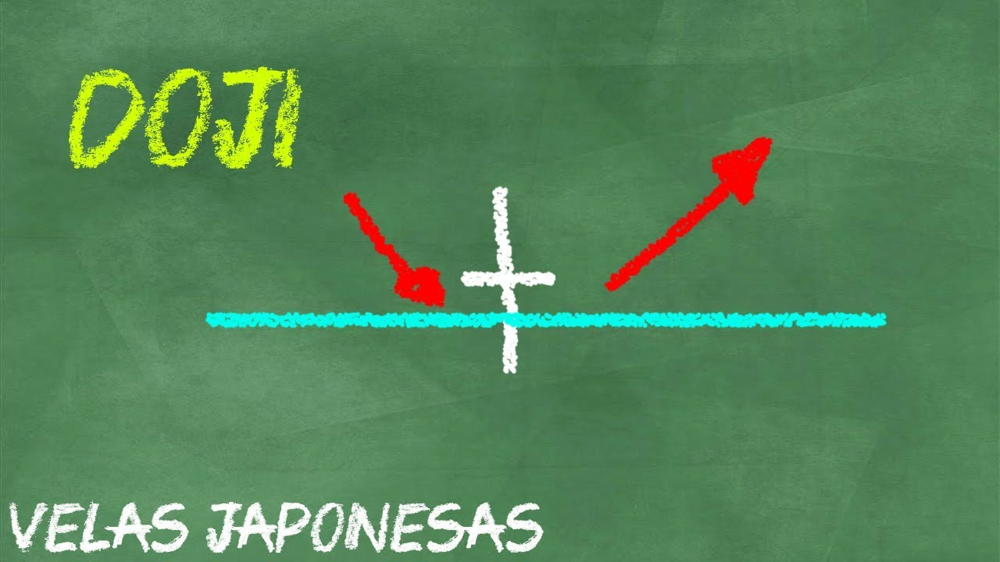

Cómo operar con Doji – Patrones de Velas Japonesas
El Doji es un tipo de Vela Japonesa que nos muestra indecisión en el mercado por parte de los compradores y vendedores. Estos no logran definir una dirección, generalmente la vela se representa cono una línea gris con mechas.
Esta vela se caracteriza porque posee un cuerpo muy pequeño, o no tiene cuerpo (el cuerpo sería una línea gris cómo podrás ver en los ejemplos más abajo).
Tenemos que observar muy bien la fuerza de la tendencia y el contexto completo, porque esta vela puede indicarnos una reversión de la tendencia o un pequeño descanso para continuar en su misma dirección.
Existen varios tipos de dojis, cómo podemos apreciar en la siguiente imagen:

Cómo puedes darte cuenta tenemos varios Doji, Doji Neutral, Doji Piernas Largas (Long-Legged Doji), Doji Lápida (Gravestone Doji), Doji Libélula, (Dragonfly Doji) y Doji con pequeños cuerpos, los cuales podemos encontrar en las variaciones anteriormente mencionadas.
Empezaremos estudiando los Doji Neutrales, y Doji piernas largas.
En la siguiente clase de patrones de velas veremos la explicación detallada de como operar un doji.
